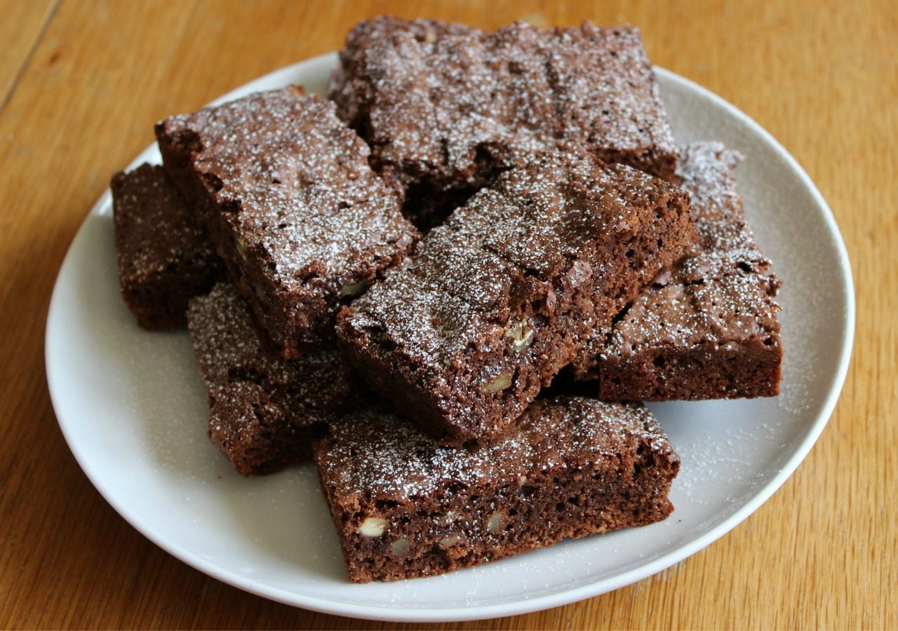

★★★★★
Brownies de xocolata
Quan preparis aquesta recepta per primera vegada i la provis, no en voldràs mai cap altra. Si ets al club dels apassionats per la xocolata tant com nosaltres, es convertirà en el teu dolç preferit!
Porcions: 12
Ingredients
- 200 grams de moniatos rostits.
- 100 grams de plàtan madur.
- 80 grams de crema de fruits secs.
- 50 grams de cacau en pols pur sense sucre.
- 1 cullaradeta de llevat de rebosteria o pols de coure.
- 40 grams de farina d'ametlles.
Utensilis
- Forn
- Motlle
- Forquilla
- Bol gran
- Paper de coure
Passos d'elaboració
- Tritura els moniatos amb una forquilla fins a aconseguir un puré.
- Tritura el plàtan amb una forquilla i barreja-ho amb el puré de moniato i la crema de cacau fins obtenir una barreja homogènia.
- Tamisa el cacau i la pols de coure, afegeix-los a la barreja i integra'ls bé.
- Afegeix-hi la farina d'ametlles i barreja-ho fins aconseguir una massa uniforme.
- Forra un motlle amb paper de coure i aboca la barreja.
- Forneja a 180 graus durant 25-30 minuts, calor amunt i avall, fins que en punxar amb un escuradents, surti net.
@teresa31 (01/04/2025)
Aquest brownie és espectacular! Molt fàcil de fer, deliciós i, a més, sense sucre :0
@JoanVidal (02/04/2025)
M'ha encantat la recepta. No he tingut cap problema amb els ingredients!
@alexis0k (03/04/2025)
Perfecta per a un berenar amb amics.